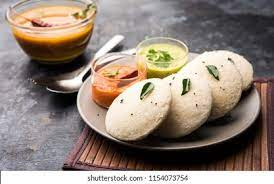

Idli Recipe

Ingredients:
- 2 cups idli rice or parboiled rice
- 1 cup urad dal (black gram)
- 1/2 teaspoon fenugreek seeds
- 1/2 teaspoon baking soda
- Salt to taste
Instructions:
- Wash the rice, urad dal, and fenugreek seeds separately and soak them in water for 4-5 hours.
- Grind the soaked rice, urad dal, and fenugreek seeds together into a smooth batter. Add water as needed while grinding.
- Transfer the batter to a large bowl and add salt. Mix well and let it ferment for 8-10 hours or overnight. The batter will rise and become slightly fluffy.
- If desired, add baking soda to the batter and mix well. This is optional but can make the idlis fluffier.
- Grease the idli molds or plates with oil or ghee.
- Pour a ladleful of the batter into each mold and steam the idlis for about 10-12 minutes, or until a toothpick inserted comes out clean.
- Allow the idlis to cool slightly before removing them from the molds.
- Serve hot with coconut chutney and sambar.